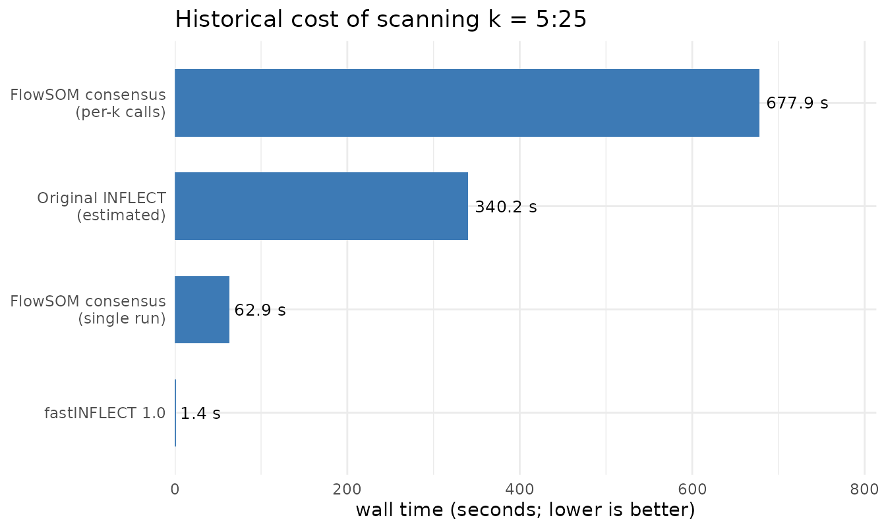

Benchmarking fastINFLECT against consensus metaclustering
Source:vignettes/benchmark-inflect-vs-consensus.Rmd
benchmark-inflect-vs-consensus.RmdThis vignette reports a historical engineering benchmark: the cost of scanning a range of cluster counts on the bundled Levine32 SOM. It does not validate cluster modality and must not be used to choose a scientific partition.
The packaged cache was generated by fastINFLECT 1.0 with zeroes.in = FALSE. Version 2.0 changes that scientific default and renames the aggregate to qc_pass_rate. The cached timing remains useful as performance context; its old aggregate “unimodality” interpretation is retracted.
Work being compared
The historical benchmark scanned k = 5:25 in three ways:
| Engine | Work |
|---|---|
| Original INFLECT loop | Repeats cluster-marker scoring independently at every k |
| fastINFLECT memoised Ward sweep | Scores each distinct hierarchy subtree once |
| FlowSOM consensus | Runs ConsensusClusterPlus, either once to the maximum k or repeatedly per k |
Consensus metaclustering and Ward.D2 cuts do not produce the same partitions. The timing comparison measures the cost of scanning; it is not a claim of methodological equivalence.
Historical runtime
runtime <- data.frame(
method = c(
"fastINFLECT 1.0",
"Original INFLECT\n(estimated)",
"FlowSOM consensus\n(single run)",
"FlowSOM consensus\n(per-k calls)"
),
seconds = c(
cache$totals$inflect_scan_seconds,
cache$totals$legacy_inflect_scan_seconds,
cache$totals$amortized_seconds,
cache$totals$consensus_scan_seconds
),
stringsAsFactors = FALSE
)
runtime$method <- factor(
runtime$method,
levels = runtime$method[order(runtime$seconds)]
)
ggplot(runtime, aes(x = seconds, y = method)) +
geom_col(width = 0.65, fill = "#3D7AB5") +
geom_text(
aes(label = ifelse(seconds < 1, sprintf("%.2f s", seconds), sprintf("%.1f s", seconds))),
hjust = -0.1,
size = 3.4
) +
scale_x_continuous(expand = expansion(mult = c(0, 0.2))) +
labs(
x = "wall time (seconds; lower is better)",
y = NULL,
title = "Historical cost of scanning k = 5:25"
) +
theme_minimal(base_size = 11)
Historical fastINFLECT 1.0 engineering timings for scanning k = 5:25 on the bundled Levine32 SOM. These bars are not modality evidence.
The original-loop bar is projected from sampled legacy diptest::dip.test() calls and carries sampling error in the cache. Absolute times are machine-specific. The structural reason for the speedup is stable: a nested hierarchy contains far fewer distinct SOM-node subtrees than the number obtained by summing clusters across every tested k.
efficiency <- cache$efficiency
knitr::kable(
data.frame(
quantity = c(
"events",
"SOM nodes",
"markers",
"legacy cluster-marker calls",
"memoised subtree-marker calls"
),
value = c(
format(efficiency$n_events, big.mark = ","),
efficiency$n_nodes,
efficiency$n_markers,
format(efficiency$total_cluster_marker_tests_legacy, big.mark = ","),
format(efficiency$distinct_subtree_marker_tests_inflect, big.mark = ",")
),
check.names = FALSE
),
align = c("l", "r")
)| quantity | value |
|---|---|
| events | 32,288 |
| SOM nodes | 375 |
| markers | 32 |
| legacy cluster-marker calls | 10,080 |
| memoised subtree-marker calls | 1,440 |
Version 2.0 correctness gates
Performance is subordinate to the following invariants:
-
set.iis literal and no unscheduled k is evaluated; - every requested partition has exactly k labels and covers every SOM node;
- dip, IQR, and combined matrices are retained separately;
- complete finite transformed distributions are the default;
- simulated p-values and optional samples are deterministic across worker counts and preserve the caller RNG state;
- worker errors are reported before any result matrix is assembled;
- fitted endpoints without partitions are labelled as estimates;
- interpolation on tied small-sample grids is warning-free.
The package test suite checks exact serial scoring comparisons as well as serial/two-worker identity. These are correctness checks, not evidence that a biological cluster is homogeneous.
Current large-model validation
The real-model audit is separate from this historical timing cache. It stages deterministic samples from all 39,050,953 events and runs independent dip and ACR tests with checkpointed Slurm arrays:
system("data-raw/submit-real-model-modality.sh")The workflow writes exact combinations, failures, warnings, peak RSS, wall time, partition metadata, node-level adjusted Rand indices, and refinement sensitivity to inst/benchmarks/real-model-modality/.
For the frozen BMV model (md5 784b3a6048c379ca64bbe8d4c0fb063d), the literal full-event k = 25,…,100 sweep selects combined INFLECT inflection k = 27 and combined/dip Kneedle k = 44. The first five-k consensus plateau begins at k = 29; IQR and event-weighted explained dispersion put the upper spread sensitivity at k = 55. The operational fitted-model choice is therefore nominal k = 44, with k = 27–29 and k = 55 retained as lower-structure and spread sensitivities.
One zero-event SOM-only cluster makes nominal k = 44 equal to 43 event-populated clusters. Its final independent modality audit contains 56 detected, 118 ambiguous, 28 unresolved, and 986 no-detected cluster-marker entries. These residuals preclude a global unimodality claim. Exact selection, consensus, internal-validity, spread, and ACR/dip evidence is retained in inst/benchmarks/real-model-selection/ and inst/benchmarks/selected-k-modality/.
Its allowed conclusions are detected_multimodality, ambiguous, no_detected_multimodality, and unresolved_discrete. A solution-level “no detected multimodality” statement is permitted only when every assessed marker in every cluster has valid, concordant evidence with no ambiguous or unresolved entry.
The older large-model-cap-stability-2026-07-24 and large-model-notebook-acceptance-2026-07-24 artifacts predate these rules. They are retained for provenance but are invalid as evidence of unimodality because they used the IQR-only spread curve, excluded non-positive values, and did not materialise the fitted k = 62 partition.
Reproducibility
knitr::kable(
data.frame(
component = c("R", "fastINFLECT", "FlowSOM", "diptest", "ConsensusClusterPlus"),
version = c(
cache$machine$r_version,
cache$machine$inflect_version,
cache$machine$flowsom_version,
cache$machine$diptest_version,
cache$machine$consensusclusterplus_version
),
stringsAsFactors = FALSE
),
align = c("l", "l")
)| component | version |
|---|---|
| R | R version 4.5.1 (2025-06-13) |
| fastINFLECT | 1.0.0 |
| FlowSOM | 2.18.0 |
| diptest | 0.77.2 |
| ConsensusClusterPlus | 1.74.0 |